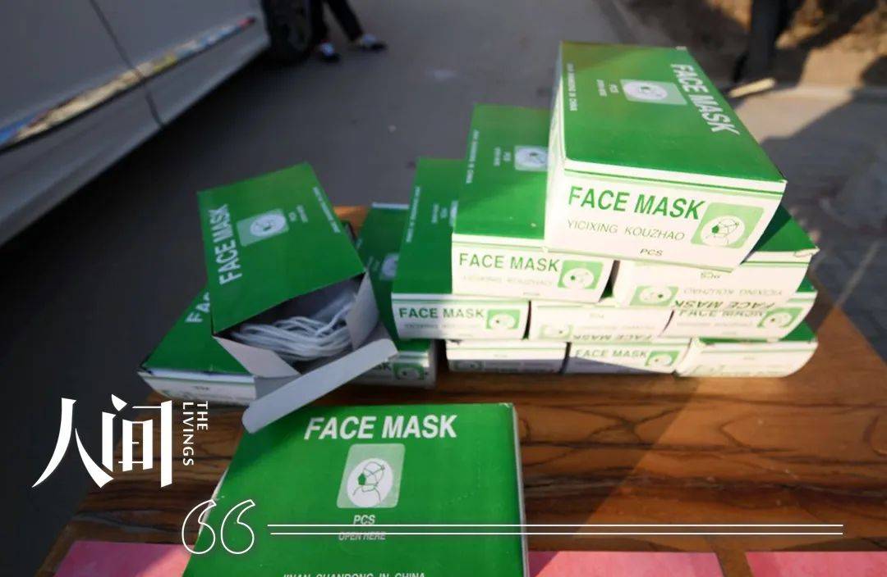
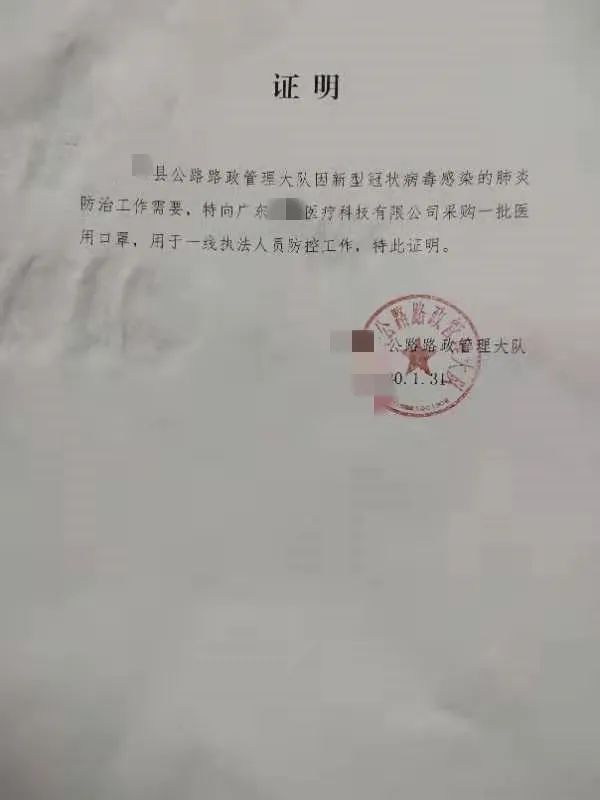

一只口罩的利益之旅
原文链接 备份链接 文/谢如颖 编辑/杜强 自从新冠肺炎证实人传人以来，各类口罩——尤其是医用防护口罩（N95）——的全国性脱销似乎只在一夜之间。 一位业内人士告诉《时尚先生 Esquire》，全国的口罩产能在 1480 万左右（自国家发 …


签收之后，我把箱子拿回家，拆出一个口罩一看，傻了眼——口罩是近乎透明的，接了水之后，滴答滴答往下漏水，再看包装，上面没有任何厂家信息，合格证都没有一张。

配图 | Sipa图片社

人间骗局丨连载53

今年年初，我回到四川的老家。平日里关注新闻，只为从中获取一些可以赚钱的信息。
一天，我看到了一条“武汉不明肺炎”的消息，一瞬间就联想到了“非典”和“猪流感”。可转念一想，以现在的医疗技术，这病应该很快会被控制住，看着大街上川流不息的人群，我觉得这不是什么大事。
1月20号那天，一个远在山西的朋友突然在微信上问我买到口罩没有，“我这边口罩全部都被买完了。”
“买口罩干什么？”我毫不在意。
“你消息咋这么封闭，武汉爆发疫情了！现在到处都在抢口罩，药店都断销了！”他发来语音消息，语气还略带嘲讽。
我心里“咯噔”一下，赶紧上网搜索，发现已经有几百个人确诊了。除了武汉、北上广也都有病例。当晚，父亲看了新闻联播，念叨着：“不知道又有多少要去发国难财的人了。”知子莫如父，他的话充满了别样的意味，分明是说给我听的。
“现在要去发国难财的就是吃烂钱，我也看不起。”我赶紧表态。虽然嘴上这么说，可我晚上却辗转反侧、难以入睡。
我心里暗自决定：口罩还是要买，自用也好，就按照新闻里面说的，买N95。

第二天一早，我跑到离家最近的药店，店员从柜台底下拿出一盒口罩，“一次性刚卖完，只有这种N95的了，28一个。”
“28块？！”我看着那个写着“仁和制药”的绿色盒子，不能接受这么高的价格。我又连跑了几家药店，每家给出的答复几乎一致：口罩断销，正在进货，要过几天才有。
我赶紧跑回第一家药店，心想连我们这种十八线小城口罩都断销了，大城市不是更没有了吗？心一横，我一口气买了40个N95口罩和几个儿童口罩，一共花了近1200元。
回家后，父亲看我手上提着一大袋口罩，随手拆开一盒翻看，“你想干什么？不要干些违法的事情哟！”
我没好气地说，口罩是买回来给家里人用的，跑了好多药店才买到这么点。父亲看着我，又再三叮嘱：“这个钱挣不得，要走正途才是对的。你是大学生，应该懂这个道理。”
隔天，我接到了另一个朋友的电话，问我这里有口罩没，“帮我买点呗。”我挂掉电话给他打视频，显摆自己买到的N95口罩，逗他：“我买的是最高标准口罩，怎么样，40一个，我给你寄过去。”
“行，发顺丰，我现在好没安全感。”他一口答应。
我瞬间就慌了神，赶紧说自己是开玩笑的，“28买的。我跑这么久，给你寄5个，你给我150就行。”

一时间，口罩变成了抢手货。一个朋友在群里洋洋得意地说，这两天他买卖口罩赚了好几万元。
我再也压制不住内心的冲动了。
怕被父亲知道，那天，我偷偷开车去县城找高中同学小林，并把他带回市区。我随手指着一个“出门戴口罩”的横幅，问他：“现在肺炎这么严重，口罩很好卖，你要不要干？”
小林对我的提议持怀疑态度，我便拉着他跑了几家药店，口罩没了，酒精没了，连板蓝根也都有人抢。小林坐在副驾驶沉默不语，半晌说了句，“我这几天出门，就没看见多少人戴口罩。”
“你那边都是老年人，他们不信这个，而且更大可能是他们买不到，而不是不戴。现在口罩的产量也不够，一天满打满算两千万，一只4个小时，中国这么多人，一天随便都需要上亿的口罩。”我振振有词。
小林还是不放心，隔天，我们又跑了一圈他们县城的药房，他才终于相信了。
我们马不停蹄地找起了口罩的货源——看起来，最好的办法就是网购。于是，他上淘宝，我走1688。
我俩都想找可以马上发货的“现货”，但有反应的客服，给我们的回答如出一辙：口罩已卖完，过年人手不够，年后发货，需要的话直接下单或者加微信。剩下的客服干脆没有回音，消息直到今天，状态还是“未读”。
等得越久，风险越大。最后，我们干脆打电话询问卖家——对方手机号码属地基本都是湖北，但不是正在通话中就是关机。
我又加上了一些商家的微信，他们像商量好了似的，“口罩有货，但不能走平台，没有原因，只能微信转账发货。”
“要不我们在淘宝上买吧，这儿有个店家回我了，说这两天可以发货，1块2一个。”小林觉得微信转账的方式不保险。淘宝相对安全，可发货的时间太长了。“两天发货，等到了都2月了，会砸在自己手里面的。”我说。
小林琢磨了一下，认为可以先在微信上少买点，大头还是上淘宝买，“等对方发货过来，如果口罩不值钱了就无理由退货。”
我在微信列表里选了又选，最后定了一家。“一次性医用口罩4000个，独立包装，三证齐全，1元一个；N95口罩2000个，12一个，付全款，广东佛山，马上发货。”
“老哥，你看能不能你发货了，我们再给你打钱。”我试探着问。
“不行，必须全款。”对方发来简单的几个字，又甩给我几张顺丰的单号和口罩的实拍图。
我把这人的朋友圈翻烂了，看起来他真是个卖口罩的，还挺正规。我跟小林商量：“要不先拿2000个一次性的，万一被骗，不光省了2000块，（金额）也够报警了。”
微信转了2000元钱过去，之后的几个小时，我们一直怀着忐忑的心情在等待发货。我们没有被骗，口罩发出来了，我再问卖家还有口罩没，他说一个都没有了。小林也在一家淘宝店下了订单，买了6000个一次性医用口罩。
我俩沉浸在即将赚钱的喜悦当中，可苦苦等了好几天，淘宝买的口罩也没发货。小林问客服没有任何回复，我翻查这家店的信息，发现这个卖家原来是个卖家具的，他家口罩下面的评价只有两条。
“这不摆明了趁着疫情用我们的钱免费刷单吗？你看这销售记录，多少人和我们一样在等。这么多口罩他一个卖家具的怎么可能发得出来，申请退款吧。”被店家忽悠了，我没好气地说。
后来，我姐夫也在淘宝上买了10个N95口罩，花了600多。说是国外进口的，当天就发货了。

1月28号，口罩到货了。我匆忙跑到楼下跟快递小哥说：“等一下，我开车过来。”我怕这一大箱口罩被父亲看见。
我看了眼外包装上的生产厂家，湖北仙桃，不禁心里犯起了嘀咕。我给卖家打电话，“这口罩为什么是从湖北来的？没有问题吧？”
“没问题，湖北是最大的产地，这些是我们的存货。”他说。
难怪这几天我打的卖家电话属地基本都在湖北，听到他的解释，我也放心了。
等父亲出门，我才把口罩偷偷搬回家中，拍了几张实物图和视频在闲鱼上发布。我标记的单价是3元一个，“现货，可以自提”。
不过半个小时，我就收到了100多条消息：
“现货吗？现在可以拿吗？”
“医用口罩吗？有多少？”
“我是医院的，能不能卖我点，很急。”
“口罩全部拿了，可以便宜点吗？”
一看这么多人要，我便起了贪念，心想着不如就把单价提到5块，这样一次可以赚个小1万。
我给一个想“全拿”的人回了消息，没想到对方发来的消息却让我差点惊掉下巴：“我是市里的警察，买口罩是用来发社区的，你这一个口罩5块，是高价口罩！这几天市里已经查处了好几家药店，等疫情好转分出人手，必定严查严打，现在是联合执法，抓人快得很。”
我心惊肉跳地回答：“这个还高价？人民医院对面的商店，纱布口罩都卖到了8块一个，我卖医用口罩，一个5块很过分吗？”
“行，口罩我要了，你是哪个药店的？我们来自提。”他说。
我害怕了——如果碰见钓鱼执法，肯定完蛋了。
他见我不说话，又发来消息，“你便宜点，我们全要了，发社区用的。”
后来，他发来的消息我再也不敢点开，更不敢回复。我心里面琢磨着——这2000个口罩，我到底要怎么卖出去？
就在我发愁的时候，父亲不知从哪里得知了我在卖口罩的消息。他回到了家中，直接问我：
“你口罩从哪里买的？”
“网上。”
“卖多少一个？”
“进价1块，现在想的是（卖）3到5块。”
“你是不怕死，想钱想疯了！”父亲很是生气，显然，他的叮嘱都被我当成了耳边风。
“现在网上都卖2、3块，还不是现货、不是医用，我这价格不高！”我辩解道。
“账不是这么算的，别人卖好多钱，那是他们的事情，他们不怕。你这个口罩成本1块，就算是现在是过年期间、口罩紧缺，它也值不了3、5块，最多1块多钱。”父亲点了一根烟，苦口婆心地说。
“那我就按照他们的报价卖，可以吧？”

被父亲教训完，我点开了一条信息，是一个姓王的女人说要帮医院买口罩。我报价5块后，对方就没再回复。
“你出好多？我这里有2000个，可以自提。”我又给她发了一条消息。
“最多2块（一个），我们视频看一下口罩，转了钱就删好友的人太多了。”她回。
我按照她的要求，拆了一个口罩出来，用剪刀剪开，看里面是不是3层、防不防水。验货没问题后，她说：“口罩可以，我们要了，我给你发个位置，你给我送过来呗？油钱我给你，我现在在执勤，出来不了。”
我看了下她发来的地点，在邻县，估摸距离，我跟她要了200块钱油钱。父亲不放心我一个人，说跟着我一起去送货。
我们的车子刚一下高速就被堵住了，封路，只有本地人可以通过。
“你等下，我叫我同事过来拿，你就在出口等着。”王姐跟我说。
半个小时过后，一个男人开车赶到，他拿起一个口罩反复检查，“口罩还行，有货了再通知我们。”接着他给了我4000元。
我赶紧把赚的钱转了一半给小林，父亲坐在副驾上说：“这是最后一次了！”
当天晚上，还有不少人给我发消息。
其中一个买家说：“如果你是厂家，有多少口罩我全部都要了，如果你是中间商，有货源，你给我低价，我一个（口罩）给你5分钱的回扣。”
她的话让我产生了极大的兴趣。我问她要这么多口罩干什么，她却让我别管，“反正我买口罩，你要什么手续都可以给你。”
看到她这句话，我想，帮别人找下货就能拿回扣，自己也不用出钱，安全。于是，我立马联系了微信上的网友“荒唐”——之前我问过他关于N95口罩的事情。
他告诉我，现在N95口罩只有工业的，医用的全部都在一线工作人员那里。不过，荒唐向我推荐了一款名叫“朝美”的普通医用口罩，Y2-B型。他说这是国内大厂生产的，现在有库存16万，“全部拿的话给1块2”。
我把消息告诉那个买家，她的语速变得非常急促，“全部要了，全款，马上付。但是货在哪里先问清楚，还有，发票要多开，我们补税，走公对公转账，公司资质，产品报告。我们要自提，分分钟到位。”
我问荒唐口罩现在在哪里，他却吞吞吐吐说不清，一直和我绕圈子。绕到最后，他说：“这样吧，到时候我们对公转账过去，给你拿返点，这样大家都‘安全’。”
“行。”我一下就猜出了他的心思——他怕对公转账，会收不到他的那份钱。
可之后的1个多小时，他又断断续续给我发消息：发票多开、补税可以，对公转账不行，“老板怕被查”，“现在工厂被管控了，不能自提，只能发快递”。
“不行，不接受对公和自提的都是骗子，最差也要叫‘货拉拉’去，见货付款。”买家坚决地说。
我把买家的消息转发给荒唐，他就没再说话了，晚上10点过后，他给我发来几张图片——“飘安集团一次性医用外科口罩，10万现货。”
这次，买家又嫌1块6的报价太高了。荒唐说“朝美”口罩有300万的半成品，要的话可以预定，这个最便宜。但买家依然坚持只要现货。
后来，我在帮医院采购口罩的时候才知道，幸好当初没有谈成这两笔生意，不然都不知道自己要背负多大的责任，“就是我们医院去拿口罩，一次最多也只能拿几千张。朝美、飘安这些国内的大厂，怎么可能有十多万的存货？那些大厂门口全部都是警察，生产出来的口罩第一时间就要运往湖北，别说他偷偷带出来，就算他老板都不能。”
而荒唐口中的“大牌医用外科口罩”，基本都是小工厂伪造的。

2月1号，第一次买我口罩的王姐又找到我，希望再购买一批医用口罩。她向我推荐了她妹妹小王，说这次由小王跟我对接。
父亲让我拒绝，我只能回复小王：“不行，我不敢卖了。手里面也没有口罩，现在查这么严，我也不敢去买大批量的口罩，万一被扣了怎么办。”
“这样吧，你放心，我给你开批文，只要你能搞到口罩。”小王说。
我听说，这一纸批文就是“圣旨”一般的存在，可以把口罩生意从违法变成合法，既然我有货源，为什么不堂堂正正赚这笔钱？
“那行，你先把批文给我，我再给你找。”我说。
“不行，你先调货，路上出了问题，我给你批文，现在我先给你去开证明，还有就是，价格不能高于2块2。”
几个小时之后，我收到了小王给我开来的一张路政委托证明和一张介绍信，“红头文件出了问题再给你，现在领导说不能乱给。”

| 小王给我开具的“路政委托证明”（作者供图）
我拿着这两份文件又去找小林——他和我的处境一样，他的父母觉得这是伤天害理的生意，坚决不能做——有了文件，我们也就放宽了心。
我俩又找到一个在成都的买家小刘，他也是唯一一个愿意面谈的卖家。当天晚上我和小林就赶往成都。
小刘在一家服装厂工作，手里面有不少的厂家资源。现在口罩供不应求，加上管控，所以厂家只愿意接大单。小刘谈了一笔35万（口罩数量）的单子，拼单之后还剩下10万的量。“厂家是湖北的，不能去自提，只能给你偷偷发出来，一张（口罩）是2块”。
我把小刘之前的订货信息和口罩的规格信息发给了小王。确认了小刘不是骗子之后，小王说：“口罩可以，但是4号之前必须到。我给你开批文，是立下了军令状，到时到不了，我工作都要丢掉。”
小刘听到这个要求后面露难色，“口罩量太大，是分批发的，4号之前可以到一批，到时候大家一起分一点儿。”
我给小刘转了3万元的定金，之后的17万，等到货了，再由小王转给他。
“你这个货这么多，到时候最好是自己找货车来拉。”小刘叮嘱。
“我知道，到时候到货通知我就好了。”我一边应承，一边偷偷留下他的身份证照片，把他的微信朋友圈截图。
分别后，我对小林说：“你偷偷去跟着他，看看他去了哪里、家在哪里。他收了这么多钱，有可能跑，万一人跑了，我们钱就没了。”
2月2号一早，我在微信上给小刘发了询问的消息，确保自己没有被他删掉。
没想到，他却回复我：“单号现在出不来，货太多了，打包要时间，最快也要下午才出来，走的是邮政。”
我心里盘算着——走邮政，口罩4号之前恐怕是到不了。“我们先去闲鱼上找二道贩子买点，到时候万一你这边口罩没到，也好先顶着，不然后面的生意就不好做了。”我说。
小林很快在闲鱼上找到了一个乐山的卖家——只有这家接受“走平台”。他家的链接里面有两张图，一种医用的口罩，1块8，一种普通的口罩，1块。
“普通的有什么用？给我拿1块8的，全部要了！”小林急急地说。
敲定之后，买家修改了价格，4000个口罩，7200元。
3号中午，我又给小刘打了电话问单号。
“出来了出来了，你别急。”他的口气有些敷衍。
“兄弟，你说‘第二天发货’，今天都3号了我连单号都没看见。你要给我说清楚，口罩究竟发出来没有？那边没发，你就退钱，我好找解决办法。”我有点气急。
“下午我把单号统计好发给你，你自己查。”他说。
几个小时后，他给我发来了100多张单号，我却一个都查不到。他又发了一段语音过来，信誓旦旦：“哪有那么快，录入系统也是需要时间的。你等晚上或者明天查，肯定就有了！”
我心里清楚，小刘的口罩，4号之前肯定是没指望了，我只好老老实实告诉小王情况，说只能先用我在闲鱼上买的口罩顶一下了。
“行，4000个就4000个，最晚最晚，4号晚上你也要送过来，剩下的口罩，后面必须要到！”小王给我下了死命令。

4号早上，我和小林开车离开成都——那4000个口罩到了，我得自己去拿给小王。车下高速的时候，我们发现小刘给的单号依然查不到，他的电话也打不通了，微信发过去，消息也不回。
“不会他在我们身上装GPS了吧？看到我们离开成都就玩消失。”小林有些担心。
“换个号加他，然后再打电话。”
小林用另外一个微信号申请加小刘为好友，半个多小时后，依然没有通过。
我决定先发个消息试探他：“兄弟，你这玩消失不对，我有你身份证和电话以及上班的地方，你跑不掉的，再不回消息，我们就报警了。”
几分钟过后，小刘电话打了过来：“这几天都没睡好，刚刚睡得太沉了，没听见——货已经发出来了，应该最晚7、8号能到一批，如果你不放心，我现在就把钱退给你，但是今天我微信（转账）限额了，12点再给你吧。”
听他这么讲，我悬着的心才算落地——晚几天到也可以，总比一场空要强。
放下电话，来到顺丰的货站，我和小林打开那个咸鱼卖家发来的8箱口罩，汗立刻就下来了——说好的“一次性医用口罩”，竟然全变成了一次性纱布口罩！
小林立刻抄起手机打给卖家，开着免提一通怒吼：“你给我们发的什么东西，纱布的，谁敢用！？”
“你们要的不就是这个吗？”那个卖家抵赖。
“谁会在这个时期买纱布口罩？现在买的都是一次性医用口罩！当时我说得很清楚，你这个口罩我不能要，现在就要退货退款。”小林气极。
8箱口罩，从河南发过来，1152元运费，我们谁也不想承担，纠缠了1个多小时，最后我撂下话：“今天谈不成，我们就找客服介入，反正聊天记录都有，让客服决定。”
可小林却让我赶紧噤声——他小声跟我说，这7200块钱里有5000是跟朋友借的，说好今天还，客服介入，退款要等10多天，等不起。
小林的话把我气得火冒三丈，我只好妥协：“那就给他退过去，邮费他出大半，我们出小半。”
卖家答应了我们的退款要求，可另一个严重的问题又摆在我的面前——小王要的口罩，现在是一个都没有了。我只好心虚地跟她解释：“我这前面定的4000个口罩，现在我看见货了是纱布的，你要我也不敢拿给你用了，能不能再宽限几天？”
小王一听，急得都快哭了，“不行啊，我这立的军令状，拿不出口罩工作都滑脱！”
我像热锅上的蚂蚁，各种打听，听说一个重庆的同学手里有一次性口罩，电话打过去，他说只剩2000个，价格是2块2。我像抓到了救命稻草，赶紧告诉小王：“今天没到货算我的失误，我只找到2000个（口罩），在重庆，我这就去拿了给你，2块2一个，不赚你一分钱，油费我自己出了！其他的，就只有靠你自己想办法了……”
匆匆吃了口饭，我和小林准备开车去重庆，却被他姐姐拦了下来，“不管你怎么给爸妈说的，不管是什么文件，我都不允许你做这个生意，今天县里面才抓进去两个，现在管得严得很！今天你敢出这个门，我就马上报警，亲自带着警察来抓你！”
前几天我们在成都时，他爸妈就催他回去，他姐姐的脾气我也知道，“大义灭亲”是干得出来的。小林只好跟我说，他不能和我一起干了，他出的钱就当是借我的，不要一分收益。
为了稳住小王的单子，我下午独自开车赶往重庆。高速上，我得到消息，重庆已经加强管控，进去了就出不来。
我赶紧给同学打电话，求他把口罩送到高速收费站。几经波折，我拿到了那2000个口罩赶回了本地。交货时小王告诉我，她从不知道几道贩子手上买到了2000个口罩，2块8一个。
2月5号，我还是查不到小刘给我的单号。又打电话给他，他却说：“前面那批口罩分完了，后面的口罩厂家已经2块3发给别人了，我也没办法。现在2块3可以订，你要不要？10号可以发货。”
我气不打一处来——原来口罩根本就没有发出来，给我的单号查不到，全是假的！
“你做事太水了，10号的口罩我接受不了，现在退款吧。”我已经不想跟他浪费口舌了。
但他却又给我说了一句：“还有一个办法，我手里面还有几个厂家，但是必须要用红头文件去拿，在湖北，必须自己去。价格是2块，医用级。”
我把消息转告给小王，她说：“红头文件可以出，但是必须见到口罩才能出文件，防疫办的文件不能乱出。”
“你的意思是，我要去湖北看到口罩了才能出文件？现在封路，我万一下不了高速，或者一下高速就被隔离了，再或者，我从湖北出来要被隔离怎么办？”我有点害怕。
“这个必须隔离，没办法。”小王没有一点通融的余地。
小刘那边也是一口咬定：“要口罩的话，只有去当地拿，他们送不出来，或者去了当地，然后叫个卡车司机，给他通行证，送过来后，我们到你这自提。”
我恍然大悟，小刘为什么要把这个消息告诉我——“你的意思是，我去拿了红头文件，拿出来的口罩你分一批去卖，剩下的给县上？”
“几十万的口罩嘛，县上也要不了这么多，大家一起分了才好。”说着，小刘又给我发来几张红头文件的格式，上面有需要口罩的部门、用来干什么、车牌号、送货人信息、出发地和目的地信息，唯独“数量”栏那里是空白。“就是这样的，你去搞来就行。”
我感觉自己被他耍得团团转——用红头文件拿出来的口罩用来倒卖，性质可就完全不一样了，被查出来后果严重，他可以推，我要负全责。
我对小刘彻底失望，让他还给我3万元的定金，便拉黑了他。
小王也告诉我，昨天凑到的4000个口罩顶住了，后面的口罩到不到，也没多大问题，有最好，没有的话，最多她写份检查。
我心中有愧，之后的几天，我还是给小王找到了一些KN95、KF94口罩。她说，他们县不少民营企业老板买口罩捐赠给医院，勉强够用。
几天后，我接到了来自河南警方的电话，说他们发现了一个以一次性纱布口罩充当一次性医用口罩的贩子。人已经找不到了，手机也关了机，但警方在发货记录里查到我的地址，他问我是否有这个人别的联系方式。还问我买了多少口罩，单价多少。
我不敢说谎，如实回答，电话那头传来记录的声音。
一晃到了2月14号，在QQ群里面，我又看见了一则关于口罩的消息。除了图片，还有质检视频。
我把消息转发给了小王，几分钟后，小王告诉我，这个口罩可以拿到村上发放。
我加了卖家的QQ，他告诉我，口罩3块6一个，质量绝对过关，但是因为是“民用”，所以没有质检报告。又说现在这个时期，厂家没有时间去做包装、印说明书，要是有质量问题，找他直接退款。
见他这么说，我直接要了4300个口罩，准备给小王4000个，自己留300个分给朋友。为了防止被骗，我还是留了个心眼儿，问卖家要了支付宝和手机号，支付宝转账的实名认证上显示，卖家叫阿木，一看名字，就知道是一个西北地区的人。
两天后，顺丰送到了第一箱口罩，2000个，发货地是重庆永川区。签收之后，我把箱子拿回家，拆出一个口罩一看，傻了眼——口罩是近乎透明的，接了水之后，滴答滴答往下漏水，和QQ上发的视频完全不一样。再看包装，上面没有任何厂家信息，合格证都没有一张。
完蛋了，这种口罩怎么敢拿给小王？赶紧退货退款吧！
我把口罩漏水的视频发给阿木，他却给我发来几张图片，说口罩是“两层加厚”，不能完全防水，但对飞沫“有防止作用”，“和三层没差”。
我心里骂，但只能跟他发信息，要他先把厂家的资料和他采购的证明发给我。
消息发出了几十分钟，他拿不出任何资料，只是告诉我等等，他正在打电话给发货人。我用顺丰单子上面的电话，加上了发货人微信。发货人假装惊讶地说：“漏水？怎么可能！？”说完，还给我发来几段测试口罩的视频，滴水不漏。
“但我收到的口罩确实漏水，而且连合格证都没有一张，是不是‘三无’产品？”我反问。
听我这么问，他立刻调转话题，“这个我不管，你去问你‘上家’要，我只管发货。”
见他俩踢起了皮球，我再也压不住火气了：“你这个就是‘三无’产品，今天货我不退，我拿着口罩去立案调查！”
“你给我说这个？我还怀疑你把口罩掉了包呢。”发货人继续狡辩。
“我掉包？好啊，今天只到了一箱，还有一箱没到，那箱我不会动，到时候比对鉴定！”我也不傻。
发货人见无法抵赖，又让我去找“上家”。几分钟后，阿木给我发来了一个叫阳某的成都人的名片，说是他的“上家”，让我自己去对接。说完，又告诉我，阳某也在和他的上家“对接”，要产品的证书。
阳某显然不想担责，一口咬死是我调换他的货，不给退钱。
隔了一会儿，阿木又给我发来了产品的证书，都是英文，我看不太懂。他说：“这个口罩是国外的，所以没有合格证，也没有厂家资料，只有这个，而且口罩是防水的、还可以防疫。”
我嫌这样分开沟通太费劲了，让阿木把所有的人都拉进一个群。
阳某一进群，就开始推卸责任，“我和你没有过交易，不可能随便一个人找我退款我就退，今天货有问题，我怀疑是你和你的卖家联合起来敲诈我。”
我指出他没有告知我口罩的来历和质量问题，他又说：“那是你‘上家’没和你说清楚，和我没关系。”
阿木此时也急了：“你也没给我说啊，你别什么都往我身上推！”
我觉得这样打口水仗没有用，便表明了自己的态度：“这个三无口罩究竟是不是国外的、合不合格，我都留给公安鉴定。达标，我就把货退给你们，你们继续卖；不达标，就销毁口罩，不能让你们害人。损失该谁承担就谁承担，如果是我无理取闹，我愿意承担你们的损失。”
一下子，群里没有人说话了。

过了一会儿，阿木找我私聊，有点求情的意思，“我只是一个高三学生，马上高考了，今年对我特别重要，不能有一点事，我只是赚点小钱，现在这个‘上家’完全不顾我了，你不能拿着口罩去立案调查。”
“我们都是受害者，你也不是源头，而且你也不知情，是他隐瞒你的，不怕调查。”我铁了心去报案。
“我真的一点事情不能出，我是某大的篮球保送生，国家一级运动员，你千万不能去立案，不然我这辈子都完了。”阿木又求我。
我有些心软了，我在阿木的故乡生活了多年，又在那里读的大学，知道“保送”对他来说就意味着改变命运。
“那就不报案，协商解决。”我想，大不了绕过他，直接找阳某算账。
可没想到，随后阿木却给我发来一张截图——现在口罩的价格是一天抬1毛，我若退货，必须赔偿给他4天口罩涨价的钱，也就是1720元。
“我绝对不会赔偿一分钱的，如果非要赔偿我只有去报案了。”我斩钉截铁。
十多分钟后，阿木告诉我，“上家”答应退全款了，见到快递单号，立马转钱。
第二天，第二箱口罩也到了，我没有签收，带着第一箱口罩去了顺丰，一起发快递退货。就在此时，阿木联系我，说阳某说包裹发出之后，他们只能先给我退一半钱。等包裹到了，他们点完口罩数量之后，再退另一半。
大概是见到第一箱口罩的签收信息，知道了我在哪个城市，他们说我要是有异议，就自己送货到重庆，要用身份证立下字据。1个小时之内必须到，不然非但不给我退钱，我还要赔偿给他们30%的货款。
我早就料到了他们会耍花招，先同意了他们的要求，但跟阿木提出，我要留下150个口罩作为证据，阿木又跟阳某他们交涉，说他们同意了。我便用手机拍了视频，从两箱口罩中拿出了3包，以防他们诬告我调换口罩。
等两箱口罩发出去后，阿木却一拖再拖，最后告诉我，阳某他们反悔说，口罩要等到了之后清点完数量、确定了我没掉包才能退款。
而我的打算是：包裹到了重庆后去派送时，我可以先联系送货的小哥，让他交接时给我先打个电话，若阳某不给我货款，我就不让快递把口罩给他们；他们若给我退了钱，等口罩到了他们手上之后我就报案，警察顺藤摸瓜上了门，人赃俱获，这样既绕过阿木，也可以直接抓住造假的源头。我早就摄了像，如果卖家不退款就可先告诈骗，再告伪劣产品。
可让我万万没有想到的是，快递到了之后，那个发货人第二天才去货站签收，对接的不是我第一天联系的那个快递员，没等到我收到钱，口罩就已经回到他们的手上了。
“为什么口罩只有4150个？退货不应该全退？你去饭店吃饭吃两口，让老板退钱，老板什么反应？”阳某开始假装不知道我留下口罩的事，在群里质问我。
“不是事先说好的吗？我留150个口罩作为证据。万一你们不认账，我怎么说理？”我说。
“我怀疑你行骗，调换货物，欺骗我们，而且你这么多天不停地骚扰我们，影响了我们的正常生活，必须有赔偿，而且你退货不退完，我怀疑你谋财害命……”阳某开始贼喊捉贼起来。我无奈，现在口罩在他们手里，钱款也在他们手里，阳某所说的“赔偿”，应该就是不想给我退款。
“那行吧，我只有去报警了。”我说。
“你去，拍个视频，我们也有话想给警察同志说，你一直要求面谈，恐吓我，调换我口罩，对我不断地骚扰！”阳某丝毫不以为意。
等到了派出所，我才知道是自己天真了。
我跟民警详细讲了整个事情经过，民警却告诉我，这个事情构不成诈骗，我不该来找他们——因为我的确收到了货，只是因为质量问题要求退货，应该找12315投诉，“现在最多给你做个笔录，然后汇报给上级，讨论之后才能决定——你还不如去微博上找省公安网警，他们办案还要快些，而且你这个，发货在重庆，上家在大西北，上家的上家在成都，不好办。”
抱着试一试的心态，我把报案笔录拍了个小视频发到了群里，阳某看似怂了，说我把剩下的150个口罩退回来就给退款。我心里很是纠结——这些口罩给了他们，手上就没了任何证据，他们若不给我退款，最后只能算作民事纠纷。
走投无路的我只好跟小王求助，她给我介绍了个警察朋友“支招”：“现在你这个事确实构不成诈骗，而且你只能找你的‘上家’，找其他人反而事情复杂了，现在最好的办法就是，我打电话过去看看沟通一下，先把钱要回来。”
到头来，还是没有绕过阿木。那位警察的电话打了过去，把阿木“震慑”得不轻，他开始不停地给我发消息，说：“剩下150个（口罩）你卖给我，出个单号就可以了”。
我感觉自己又要被套路，也诈他说：“不是‘卖给你’，是‘退还给你’，可现在口罩已经给了警察留作证据，我拿不出来。”
“你没懂我的意思。”他在那边心急火燎地说，“你给我出个单号就可以了，不要口罩，阳某说只要见了单号，就给退钱。”
我答应了阿木的要求，发了一个空包裹过去，钱算是退了回来——扣了我90块的运费。
我还想拿着那150个口罩去立案，可太难了——现在疫情防控，各个部门的人手本来就不够，而这些伪劣口罩涉及到的地域和人太多，办案难度太高。更何况，我最终没有损失太多，而卖家究竟卖了多少，我也无从知晓。
这一切，也只能这样不了了之了。
后记
这一个多月，我眼见着口罩涨到7块一个。口罩往往还没出厂就被预定，然后中间商们层层加价，最后才流入市场。
这其中不乏有纯粹的骗子。不告诉我电话号码，只留个微信，上来就让我先转2000元的定金再发货，剩下的“货到付款”。看似数额不大，却能骗很多人；还有人会给我一个假单号，然后给我支付宝的二维码付款，扫描之后，出来一个企业号，为的就是让人放心——可这样的企业号多半都是假的，电话是空号，地址也是假的。
就算口罩发货过来，也要查合不合格，我买到过3M的KN95，送到医院去后，却发现是假冒产品——这些骗子们接受“面谈”、“自提”，却不会留下任何联系方式。等我们发现口罩有问题后，把微信一删，溜之大吉。想讨回钱，要先自掏腰包鉴口罩，然后再报案。
我也找在国外的朋友代购口罩，他告诉我，现在医用口罩就算运回国也要十多天，那些在朋友圈里叫你先付款、“明天发货”的，除非能出示发票，否则基本都是假的。
其实，那些倒卖口罩的人自己心里也没谱，这段时间里，每当我问起他们能不能签合同，医生若被感染查出来口罩不合格、你能不能承担责任时，他们就不敢售卖了。
好在，疫情已经逐渐好起来了，口罩、酒精、体温枪的供求也会慢慢平衡。当无利可图之后，这些人大概也就一哄而散了吧。
编辑 | 许智博
烨 青
一个默默无闻的普通人

本文系网易新闻人间工作室独家约稿，并享有独家版权。如需转载请在后台回复【转载】。
投稿给“人间-非虚构”写作平台，可致信：thelivings@vip.163.com，稿件一经刊用，将根据文章质量，提供千字500元-1000元的稿酬。
投稿文章需保证内容及全部内容信息（包括但不限于人物关系、事件经过、细节发展等所有元素）的真实性，保证作品不存在任何虚构内容。
其它合作、建议、故事线索，欢迎于微信后台（或邮件）联系我们。


回复「人间骗局」，阅读往期推送

点击以下「关键词」，查看往期内容：
群聊魔鬼 | 月嫂回忆录 |家暴 | 健身房的坑 | 生子丸
考公| 萌宠博主 | 82年的金智英 | 女大学生的毒虫男友
大牛失业 | 卧底狱警 | 娶妻改命 | 中年男人的窝囊死亡
职校老师 | 产科记事 | 改嫁 | 寻业中国 | 三大队 | 股市梦碎
扶弟魔 | 末路狂花 | 下乡扶贫| 外卖小哥 | 杀死我的女神
东北相亲 | 我放弃了科研 | 网红女同学 |与巨婴离婚的女人

原文链接 备份链接 文/谢如颖 编辑/杜强 自从新冠肺炎证实人传人以来，各类口罩——尤其是医用防护口罩（N95）——的全国性脱销似乎只在一夜之间。 一位业内人士告诉《时尚先生 Esquire》，全国的口罩产能在 1480 万左右（自国家发 …
原文链接 备份链接 我一度后悔自己离开了医生这个职业，他们那么缺人，我却不能跟他们一起冲上去。难过、绝望、内疚…… 口述 | 冯 翔**** 整理 | 陈 冰 …… 冬天腊梅花， 夏天石榴花， 晴天都是人， 雨天都是伢。 过路的看风景， …
原文链接 备份链接 受疫情影响，今年春节很多人没有办法回到家乡，只能独自留在工作的城市中。今天的来信者就是其中一位，疫情爆发之后她一直独自留在北京。往日的正常生活仍然没有露出回归的迹象，只有一场暴雪如期而至。 真正要生活的人必然得是坚韧 …
原文链接 备份链接 截至今天（2月28日）16时，韩国确诊新冠肺炎感染者的总数已经升至2337人，单日累计确诊新增571例感染者，再次刷新韩国出现新冠病毒以来单日新增确诊感染者人数最大值。 一位在韩国处于居家隔离期的中国留学生为《人物》 …
原文链接 备份链接 口罩产业，中国的优势在低成本和产能，但口罩产业的金字塔尖依然被3M、霍尼韦尔、尤妮佳等公司占据，这背后是一套制造强国的工业哲学 陈琛 林雪萍 | 文 随着疫情扩展到全国，各大药房、网店口罩纷纷售罄，补货更是遥遥无期，世 …